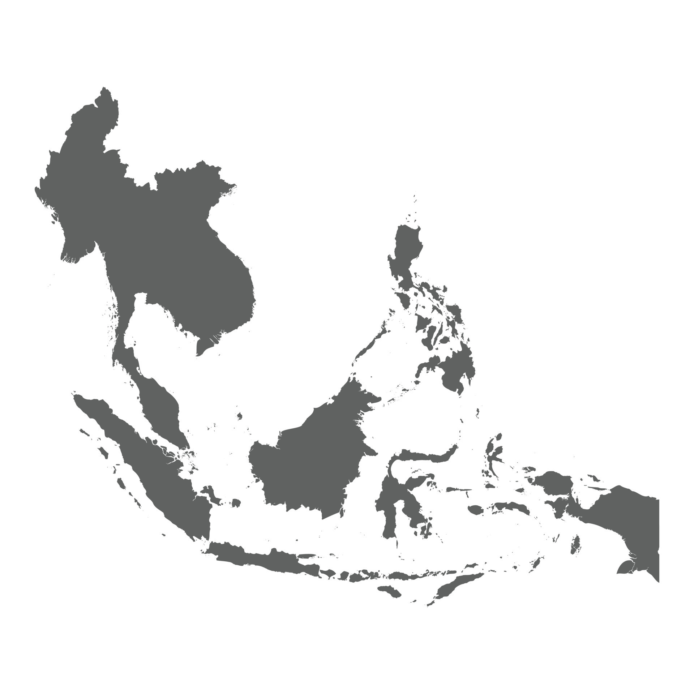
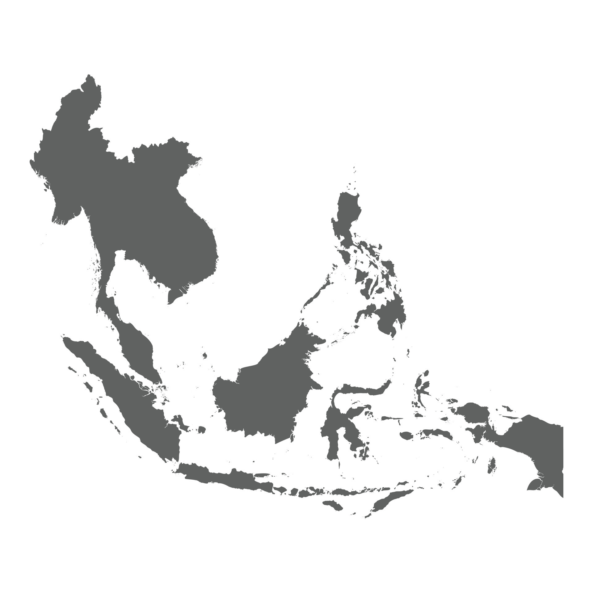

Oranges trace their origins to Southeast Asia and northeastern India, with cultivation dating back thousands of years.
Mangos, native to South Asia and particularly India, have been cultivated for over 4,000 years and are deeply embedded in Indian culture and cuisine.
Papayas, native to Mexico and Central America, have been a staple in the diets of the region's indigenous peoples.
Apricots, with their origins in Central Asia and China, have been cultivated since ancient times, known for their sweet and tangy flavor.
Tangerines, a citrus fruit, originated in Southeast Asia and have been cultivated for their sweet and tangy flavor.
Kumquats, small citrus fruits, are native to South Asia and the Asia-Pacific region and are unique for their edible skin.
The loquat, native to Southeastern China, has been cultivated for over a thousand years in its homeland. Known for its sweet and tangy fruit, the loquat has played a significant role in Chinese culture and traditional medicine. The fruit, along with its attractive evergreen leaves, eventually spread to Japan and other parts of the world, becoming popular in many subtropical regions.
Native to Southeast Asia and Indonesia, starfruits are known for their distinctive shape and refreshing taste.
Pineapples originated in South America, possibly Brazil or Paraguay, and were spread globally through exploration and trade.
Peaches originated in Northwest China and have been a part of Chinese culture and cuisine for millennia.
Nectarines, a variant of peaches, originated in China and have been cultivated for their smooth skin and sweet taste.
Jujubes, native to China, have been cultivated for over 4,000 years, prized for their sweet, apple-like flavor and medicinal properties.
Originating in regions like Iran, India, and Africa, cantaloupes have been cultivated for their sweet and juicy flesh for thousands of years.
Carrots, originally cultivated in Central Asia, were quite different in color and form compared to today's varieties, often being purple or white.

Sweet potatoes have been cultivated in Central and South America since prehistoric times, known for their sweet taste and high nutritional value.
Pumpkins are native to North America and were a vital food source for both Native Americans and early European settlers.
Various types of squash, including butternut and acorn, were domesticated in Mesoamerica and were an integral part of ancient diets in the region.
Turmeric, native to South Asia and Southeast Asia, has been used as a spice and medicinal herb for thousands of years.